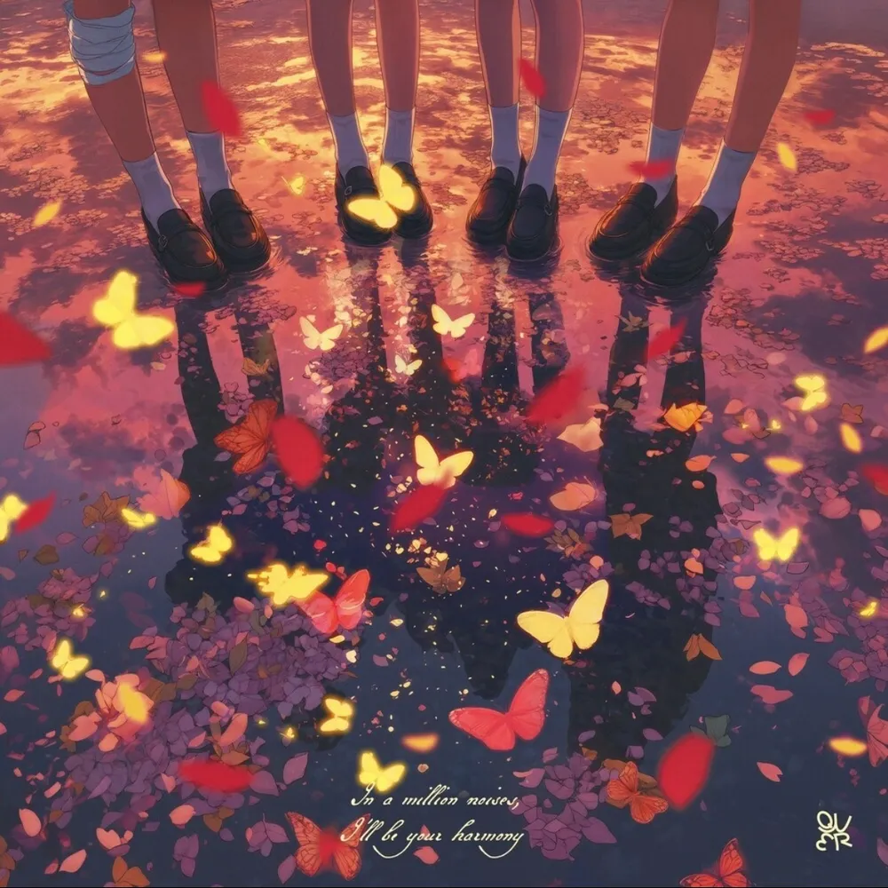

안녕하세요, 라보엠입니다.
오늘은 2025년 6월 9일 발매된 QWER의 미니 3집 ‘난 네 편이야, 온 세상이 불협일지라도’의 타이틀곡 ‘눈물참기’를 소개해드리겠습니다. QWER만의 밝고 진정성 있는 성장 서사, 그리고 네 멤버의 음악적 성장이 고스란히 담긴 이번 앨범은, 현실의 벽에 부딪혀도 서로를 믿고 앞으로 나아가겠다는 다짐을 노래합니다. 특히 ‘눈물참기’는 QWER 특유의 경쾌한 밴드 사운드와 서정적인 가사가 어우러져, 듣는 이들에게 깊은 공감과 위로를 전하고 있습니다.

눈물을 참는다는 것, 그 안에 담긴 진심
‘눈물참기’는 제목처럼, 슬픔 앞에서 애써 눈물을 삼키며 다시 한 걸음을 내딛는 순간의 감정을 그려내고 있습니다..
가사에는 “눈물 멈추는 법을 몰라요/ 차디차고 너무 아파요/ 괜찮다는 말은 다 거짓말/ 비가 내리는 여기 남겨져/ 혼자 울고 싶지 않아요/ 알려주세요/ 눈물을 참는 방법/ 내리던 비가 그치고 나면/ 내일이 꼭 올 테니까”와 같이, 누구나 한 번쯤 겪었을 외로움과 아픔이 솔직하게 담겨 있습니다.
비를 소재로 계절의 감각을 더하고, 아픔 속에서도 내일을 향한 희망의 메시지를 놓지 않습니다.
QWER 눈물 참기 노래 가사
맑은 하늘에 비 내리는 날
내 마음과 정말 닮아서 이상하네요
한 방울 한 방울씩 떨어지는 비가
점점 맘에 차서 숨쉬기가 힘들 것 같아요
세상이 아직은 무섭고
여전히 넘어지는 게
아직은 너무 어려운가 봐
눈물 멈추는 법을 몰라요
차디차고 너무 아파요
괜찮다는 말은 다 거짓말
비가 내리는 여기 남겨져
혼자 울고 싶지 않아요
알려주세요
눈물을 참는 방법
하나둘 한숨 위로 차오른 슬픔이
이제는 밖으로 다 쏟아져 넘칠 것 같아요
말해줘 다 잘될 거라고
도와줘 겁 많은 나라서
날 믿을 수 없을 땐, 어떡해야 하나요
누구라도 말해줘요
넘어지는 게 아직 너무 어려운가 봐
눈물 멈추는 법을 몰라요
차디차고 너무 아파요
괜찮다는 말은 다 거짓말
비가 내리는 여기 남겨져
혼자 울고 싶지 않아요
알려주세요
눈물을 참는 방법
내리던 비가 그치고 나면
내일이 꼭 올 테니까
눈물 멈추는 법을 몰라도
이런 내가 자꾸 미워도
잠시 멈춰 눈물을 삼키고
일기장 속에 적어 놓았던
“잘 지내나요?”란 말 위에
적어봐요
“이젠 잘 지낼게요”
잘 지낼게요
QWER표 밴드 사운드와 멤버들의 진정성
‘눈물참기’는 QWER만의 청량하고 에너지 넘치는 밴드 사운드가 돋보입니다. 서정적인 멜로디와 반대로 힘 있는 연주가 어우러져, 슬픔을 노래하면서도 듣는 이에게 힘을 불어넣습니다. 특히 이번 곡은 멤버 전원이 작사에 참여해, 각자의 진심과 경험이 고스란히 녹아 있습니다. 뮤직비디오에서는 빗속에서 힘차게 밴드 퍼포먼스를 펼치는 네 멤버의 모습이 인상적으로 그려집니다. 각자의 삶에서 때로는 불안과 무력감에 빠지기도 하지만, 서로를 믿고 다시 일어서는 모습이 뭉클한 감동을 줍니다.
앨범의 서사와 QWER의 성장
이번 미니 3집은 QWER 서사의 첫 페이지를 완성하는 앨범입니다. 눈물로 얼룩진 과거에서 벗어나, 모두와 함께하는 무대에 오르기까지의 하루를 일기처럼 담아냈습니다. ‘눈물참기’를 비롯해 ‘행복해져라’, ‘검색어는 QWER’, ‘OVERDRIVE’, ‘D-Day’, ‘Yours Sincerely’ 등 총 6곡이 수록되어 있습니다. 각 트랙은 콘서트 D-DAY를 골자로, QWER이 아침에 일어나 무대에 오르기까지의 이야기를 차례로 담아내 듣는 재미를 더합니다 멤버들은 전곡 크레딧에 이름을 올리며, 음악적 성장과 팀워크를 증명했습니다
‘눈물참기’는 현실에 막혀 슬퍼질 때, 단 한 명의 내 편만 있어도 다시 앞으로 나아갈 수 있다는 용기를 전합니다.
QWER은 “성적을 떠나 좋은 무대를 보여드리고 싶다”, “믿고 듣는 플레이리스트로 등극하고 싶다”는 포부를 밝히며, 자신들만의 음악적 색깔로 팬들과 소통하고 있습니다. 이번 앨범은 발매와 동시에 음원 차트 상위권에 오르며, QWER의 성장과 팬덤의 뜨거운 지지를 입증했습니다.
맺음말
QWER의 ‘눈물참기’는 슬픔을 마주하면서도 내일을 향해 다시 걷는 용기를 노래하고 있습니다. 밝고 청량한 밴드 사운드, 멤버들의 진정성 있는 가사, 그리고 희망을 잃지 않는 메시지가 어우러져, 듣는 이의 마음에 깊은 울림을 남기고 있네요. 1집고민중독 노래처럼 큰 히트를 칠 수 있을지 기대가 됩니다. 오늘 하루, QWER의 ‘눈물참기’와 함께, 내 편이 되어주는 음악의 힘을 느껴보시길 추천드립니다. QWER의 새로운 성장 스토리도 앞으로 계속 기대해봅니다.